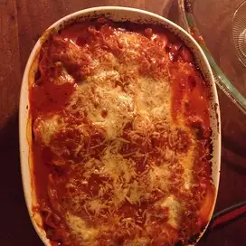

Lasagna

Description
Lasagna is a type of pasta, possibly one of the oldest types, made of very wide, flat sheets. Either term can also refer
to an Italian dish made of stacked layers of lasagna alternating with fillings
Ingredients
- 1 (26 ounce) jar Prego® Traditional Italian Sauce
- 6 each uncooked lasagna noodles
- 1 (15 ounce) container ricotta cheese
- 2 cups shredded mozzarella cheese
- 1/4 cup grated parmesan cheese
Steps
- Spread about 1 cup pasta sauce in 2-quart shallow baking dish (11x7-inch).
- Top with 3 uncooked noodles, ricotta cheese, 1 cup mozzarella cheese, Parmesan cheese and 1 cup pasta sauce.
- Top with remaining 3 uncooked noodles and remaining pasta sauce.
- Cover.
- Bake at 375 degrees F for 1 hour.
- Uncover and top with remaining mozzarella cheese.
- Let stand 5 minutes.